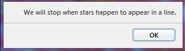
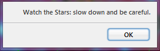
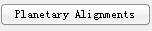
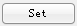
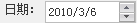
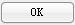

1. 用户可以通过点击“ F7 ”的方式选择查看“八星连珠”。如下图：

2. 随后的运行中，当第一次出现了符合条件的“八星连珠”的情况时候，系统会提醒。如下图：

3. 随后，系统会默认用户不再需要观看“八星连珠”。因此，不再会有提示。如果需要继续观看日食或是月食，需要用户按下“ F9 ”激活。注意：第一次的时候一定需要激活观看检测“连珠”模式。随后才可使用下一次等行为。随后的过程中，也不再会有类似于步骤 1 中的提示，但会出现如上图的提示。
4. 当然，用户可以选择关闭观看模式。再次点击“ F7 ”即可。
我们还提供了另外一种观看方式：
1. 点击  按钮，您将会看到一个对话框。其中展示了我们系统中的一些信息。您可以从中选择合适的时间，观看行星连珠。
2. 点击  ，您会发现行星的转动都会停止了，此时，我们可以通过编辑日期对话框  其中的日期。随后你会发现原来的 变为了  ，此时点击该键，则跳到了指定的日期。你可以进行各项的调整，观看各种“行星连珠”现象。